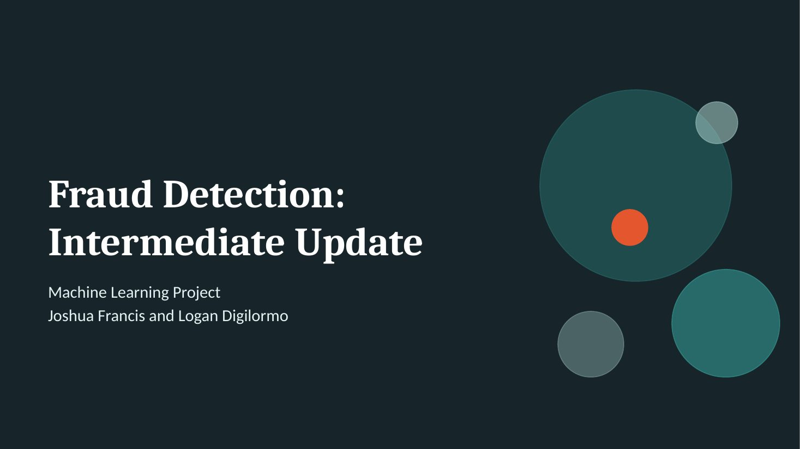

Intermediate progress presentation
Joshua Francis and Logan Digilormo. Use the arrow keys or the buttons to move through the slides.

1 / 12
Joshua Francis and Logan Digilormo. Use the arrow keys or the buttons to move through the slides.
